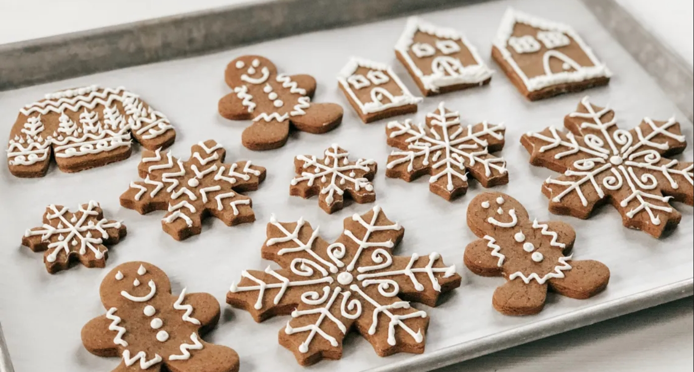

приготовление:
-
Цель — кайфануть, не зависимо ни от чего. Для этого понадобиться: чистая кухня, свободное время, расслабленное состояние, приятный легкий джаз. Заранее выложить 100 гр. сливочного масла на стол, чтобы оно стало комнатной температуры.
-
В одной миске смешивать сухие ингридиенты: 200 гр. муки (лучше цельнозерновой), 0,5 ч.л. соды, щепотку соли и сцеции: корицы 1,5 ч.л, 0,5 ч.л мускатного ореха, немного гвоздики и кардамона (специи и пропорции можно брать любые по желанию).
-
В отдельной посуде миксером взбить масло со 100 гр. сахара и 1 яйцом. Натереть цедру 2 апельсинов (можно сухую в пакетике) и 2 ч.л. имбиря. Все смешать вместе миксером, включая мучную смесь. Тесто получится липким — это ОК. Переложить в пленку и отправить в холодильник на час-два.
-
Разогреть духовку на 180 градусов. Поверхность для раскатки присыпать хорошо мукой, воложить тесто, присыпать и его мукой, накрыть листом бумаги для выпечки и раскатать в пласт 2-4 мм. Убрать бумагу, вырезать формочками фигурки, выложить на противень. Выпекать 7-10 минут в зависимости от того, насколько мягкие или потверже печеньки хочется.
-
Остатки теста хранить в холодильнике до второй партии, т.к тесто становится еще более липким в тепле.
-
Испеченое печенье можно украсить глазурью. Смешать 1 белок со 150 гр. сахарной пудры и 0,5 ч.л сока лимона. Взбить миксером около 3 минут. Использовать кондитерский мешок (1-1,5 мм диаметр среза) или шприц для нанесения глазури на печенье.